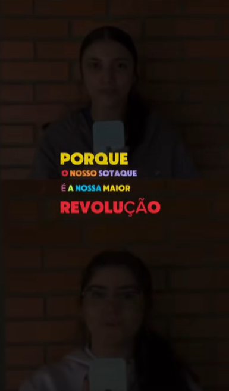
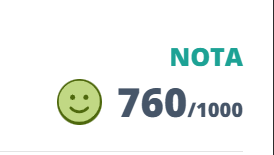

Bem-vindo(a) à seção de Linguagens. O desenvolvimento da comunicação eficaz e da compreensão textual é fundamental para o aprendizado e a expressão de ideias. Nesta página, reuni um compilado dos meus principais trabalhos, atividades de leitura e escrita, e projetos criativos que demonstram minha evolução e o domínio dos conceitos trabalhados durante o ano letivo. Confira as atividades abaixo.
Neste projeto em grupo sobre a obra A Paixão Segundo G.H., de Clarice Lispector, analisamos o livro pela lente da Antropologia. Como resultado prático, criamos um vídeo criativo no formato de resenha para redes sociais. Nesse vídeo, explicamos de forma acessível como a nossa cultura define o que é 'humano' e 'não humano', discutindo conceitos como a quebra de tabus e a origem social do nojo. Foi uma experiência excelente que uniu trabalho em equipe, pensamento crítico e comunicação digital.
H4 e H22
Achei a atividade incrível porque ela transforma a gente em criador, não só em ouvinte. Em vez de só decorar textos, eu preciso entender de verdade a escola literária para conseguir montar os desafios e a estética do jogo no Wordwall. É um jeito muito mais leve e moderno de aprender, já que a gente usa a criatividade e a tecnologia para revisar o conteúdo e ainda se diverte testando os jogos dos outros grupos.
H15 - Produzir trabalhos individuais e coletivos, explorando materiais e técnicas ligados ao universo das composições artísticas e de práticas corporais.

Nesta atividade de "Manifesto Digital", nós criamos um vídeo curto, de 1 a 3 minutos, para defender um tema atual, inspirados no espírito crítico e provocador do Modernismo brasileiro. Eu considerei essa proposta extremamente válida porque ela nos ensinou a construir argumentos sólidos usando a linguagem dinâmica da internet e das redes sociais, unindo o conteúdo da sala de aula com o nosso dia a dia. Na minha opinião, foi uma experiência incrível e muito enriquecedora, pois nos tirou do papel de meros espectadores e nos deu voz para questionar os problemas da nossa sociedade, provando que a atitude transformadora do passado continua viva e totalmente atual.
H3 - Identificar o tema principal, os subtemas e finalidades dos textos;
H24
- Produzir textos escritos de domínio acadêmico e educacional.
Nesta atividade de Inglês com a professora Ana, nós criamos um trabalho sobre o nosso consumo cultural, apresentando nosso filme, artista e música favoritos com fotos, detalhes das obras e os motivos de nos identificarmos com cada uma delas. Eu considerei essa proposta muito válida porque ela nos permitiu aplicar a língua inglesa de forma prática e personalizada, treinando o tempo verbal Simple Past, ao falarmos sobre experiências reais e preferências do nosso cotidiano. Na minha opinião, foi um trabalho excelente e muito envolvente, pois tornou o aprendizado do idioma mais leve e dinâmico, dando espaço para compartilharmos a arte que nos inspira de um jeito autêntico e criativo.
Habilidade: H25 - Interpretar textos em Língua Estrangeira Moderna (Inglês).

A Redação Online é uma das atividades avaliativas da área de Linguagens que, além de servir como instrumento de avaliação, também auxilia bastante na prática da escrita. Considero essa proposta muito positiva, pois oferece a oportunidade de treinar a produção textual de forma constante, desenvolvendo não apenas a criatividade, mas também a organização das ideias e a clareza na comunicação. Esse tipo de exercício contribui diretamente para melhorar o desempenho em redações futuras e prepara os estudantes para situações acadêmicas e profissionais em que a escrita é essencial.
H22: Produzir textos técnicos de acordo com uma estrutura estabelecida.
Atividades do 3º Trimestre em breve...